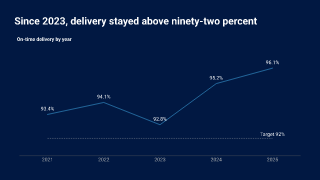
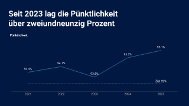
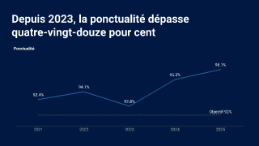
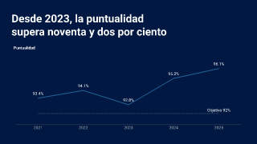
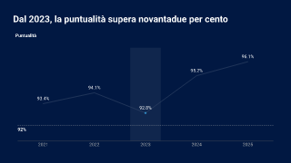
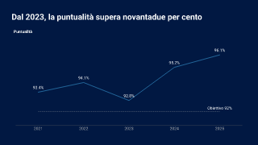
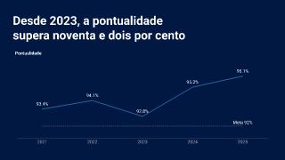
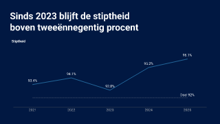

Existing baseline vs current explicit references
Raw hash-matched PNG bytes; no pixel or font parity claim. Left: accepted baseline348fd/run42498350968. Right: unchanged dc2 ordinary diagnostic, actualRED. CSS scales display only.
technical/localized-chart-references.opf.json#0
 Before 9fca74123f20c751a92a8819e6899bed024c270be1068d5a8473c1781dea29f6
Before 9fca74123f20c751a92a8819e6899bed024c270be1068d5a8473c1781dea29f6
After 2ce1c079bff120fe8c71e2c50b38969936ae93c3b96e4b144ca318c7cb22a9cftechnical/localized-chart-references.opf.json#1
 Before 0fa3559130b37b221d660f65bff74945005ebc88de123b68106230fa0098d451
Before 0fa3559130b37b221d660f65bff74945005ebc88de123b68106230fa0098d451
After 10d95d2a6d188ef235f4edc1fd7fa325303ea07c9c884dae1a88ffec338e7a14technical/localized-chart-references.opf.json#2
 Before e722744eb8fd6ea8bae08eb1dd60b76ba33c1d5238655184e3c963cf8f4f2ea8
Before e722744eb8fd6ea8bae08eb1dd60b76ba33c1d5238655184e3c963cf8f4f2ea8
After 21a4f6d58ea5ff91254b5267c139bb2f440792436a4cb7c4f0f2b9f0f3de8ee5technical/localized-chart-references.opf.json#3
 Before e99c0d9c914607eab1a77ea908de3ea47ed8113c9833f6bdccb9e9190841e753
Before e99c0d9c914607eab1a77ea908de3ea47ed8113c9833f6bdccb9e9190841e753
After db283f19631b08d5603dee30c97bb8adf6ecc1dc1f21d657b5339446085c3361technical/localized-chart-references.opf.json#4

Before b63009c33e8f2a68a97b8f178639e06ac65d99e9fd5c9a69bc8bcc6b9c2ec815
After 80100140d6de73ed585753c0f69896de3c5f27686d8aebfee4f45d75b7eea956technical/localized-chart-references.opf.json#5
 Before 90e5a6fa94a25e0676eb6580404367f06346ea865811315286619c80df621759
Before 90e5a6fa94a25e0676eb6580404367f06346ea865811315286619c80df621759
After 6ecf5af8082f56505c3cd8913f0f88853171f0ddddbc0a53cab807e88f9fa0aetechnical/localized-chart-references.opf.json#6
 Before 737a31e4bffb9f1c62afd217b386bb6c1f72c5eb092209bd8d9afbe72d6a5ac9
Before 737a31e4bffb9f1c62afd217b386bb6c1f72c5eb092209bd8d9afbe72d6a5ac9
After c745fec1d6728285a05ec5f37a13742d0d2ae1f8d77b594471dee6d394aba5fa